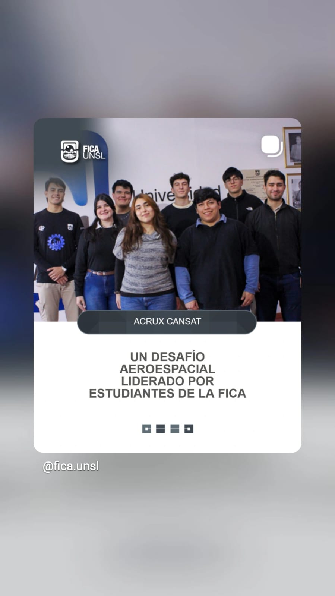
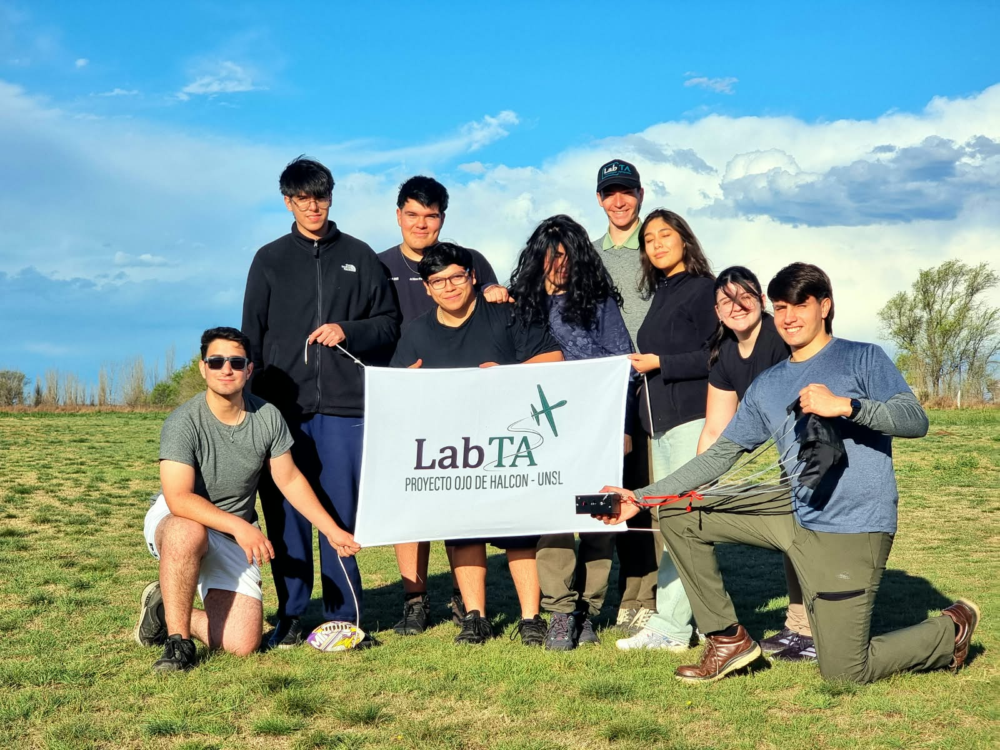

Elegir qué investigar
Seleccionar variables del sistema Tierra, como temperatura, precipitaciones, humedad, vegetación u otras variables disponibles en los productos científicos.
NASA SPACE APPS CHALLENGE 2026 · BE AN EARTH SYSTEM TREND DETECTIVE
XURCA es una herramienta digital que busca acercar los datos científicos de observación de la Tierra a estudiantes, investigadores y personas curiosas. Permite explorar variables ambientales, observar cómo evolucionan en el tiempo y analizar si sus tendencias son estadísticamente significativas.
Una propuesta de Acrux · Universidad Nacional de San Luis · FICA
Nuestro propósito
Convertir datos de la Tierra en preguntas, análisis y conocimiento.El desafío que nos inspira
El sistema Tierra está en constante transformación. Una variable ambiental puede aumentar en una región y disminuir en otra. El desafío consiste en descubrir qué cambia, dónde ocurre, a qué ritmo y si esa tendencia tiene significancia estadística.
Leer el desafío oficial: Be An Earth System Trend Detective! ↗Seleccionar variables del sistema Tierra, como temperatura, precipitaciones, humedad, vegetación u otras variables disponibles en los productos científicos.
Elegir una región y un período de estudio suficientemente amplio para observar la evolución de la variable a lo largo del tiempo.
Construir series temporales, visualizar los cambios y estimar su dirección y magnitud mediante herramientas de análisis.
Comprobar si la tendencia observada es estadísticamente significativa y comunicar los resultados con contexto y cautela.
¿A quién está dirigida?
XURCA está pensada principalmente para estudiantes de nivel secundario y universitario, y para integrantes del público general con interés o conocimientos científicos. Buscamos que explorar datos ambientales sea una experiencia comprensible, guiada y útil para aprender e investigar.
Nuestra propuesta
Estamos desarrollando XURCA como una experiencia web que acompaña al usuario desde la pregunta inicial hasta la interpretación de una tendencia. La idea es guiar la selección de una variable, una región y un período, y conectar esa búsqueda con conjuntos de datos científicos de observación y modelado del sistema Tierra.
Como punto de partida, trabajamos con recursos de NASA como Giovanni y Earthdata, además de fuentes complementarias. Entre las familias de datos que estamos explorando se encuentran MODIS, OMI, AIRS, GPM, MERRA-2 y GLDAS. La aplicación busca integrar visualización de series temporales y análisis estadístico para ayudar a interpretar la dirección, la magnitud y la significancia de los cambios.
XURCA no pretende afirmar que toda variación representa una tendencia: queremos que cada resultado pueda examinarse con datos, contexto y criterio.
Conocé el recorrido de exploración →Datos abiertos · Ciencia colaborativa
Proyecto XURCA · Exploración
Toda investigación comienza con una pregunta. Definí el fenómeno, la región y el período que te interesa estudiar.
Podés comenzar con una pregunta o elegir un fenómeno ambiental.
La región importa: una variable puede presentar comportamientos diferentes según la ubicación geográfica.
La disponibilidad de información depende de la variable y del producto científico seleccionado.
Agricultura, recursos hídricos, investigación, gestión ambiental o simplemente curiosidad científica.
Esta sección presenta el recorrido de exploración. La selección real de variables, regiones y períodos se realizará desde la aplicación XURCA.
Ir a la aplicación →Proyecto XURCA · Guía de uso
Una guía para pasar de una pregunta inicial a una interpretación respaldada por datos científicos.
Definí qué fenómeno querés estudiar. Una pregunta concreta ayuda a elegir variables adecuadas.
Revisá qué mide, cuáles son sus unidades y si representa el fenómeno que te interesa.
Elegí un área geográfica y comprobá que el producto tenga cobertura suficiente.
Seleccioná un intervalo temporal adecuado y justificá las fechas elegidas.
Observá unidades, frecuencia, valores faltantes, variabilidad y cambios abruptos.
Considerá estacionalidad, ciclos y ruido antes de interpretar una pendiente.
Estimá la tasa de cambio y evaluá significancia e incertidumbre con un método apropiado.
Indicá qué encontraste, qué no podés afirmar y cuáles son las limitaciones.
Ejemplo de investigación
Una investigación válida debe especificar si analiza temperatura del aire o superficial, el producto de datos, la región, el período, la frecuencia y el método estadístico. Un gráfico ascendente no demuestra por sí solo una tendencia significativa.
XURCA · Centro de investigación
Un espacio para descubrir fenómenos del sistema Tierra, conocer las fuentes de datos que podemos consultar y entender cómo transformamos observaciones en evidencia.
XURCA organiza el recorrido de investigación: identificar un fenómeno, seleccionar indicadores y fuentes, analizar tendencias, evaluar la calidad de los datos e interpretar los resultados con sus límites.
01 · Nivel 1 y Nivel 2
Explorá ejemplos de fenómenos incluidos en la matriz de investigación del equipo. Abrí cada ficha para consultar indicadores, fuentes, métodos y precauciones.
Identificar cambios observables en variables ambientales.
Fuentes candidatas
BASE COMPETENCIA [COMP-01; COMP-03; COMP-04; COMP-06]: Giovanni → producto meteorológico/atmosférico; AppEEARS → MOD11A2 LST cuando corresponda; CDO estaciones; KNMI contraste | COMPLEMENTO: ERA5/ERA5-Land, NASA POWER; Sentinel-5P para gases; GES DISC según variable
Método / análisis
Sen + MK estacional/autocorrelación; IC95; serie y climatología
Qué podemos comunicar
Reportar pendiente °C/década, IC, p ajustada y período; no significación = evidencia insuficiente
Precaución
No confundir LST con temperatura del aire
Fuentes candidatas
BASE COMPETENCIA [COMP-01; COMP-06; COMP-05]: Giovanni → series SST o temperatura acuática del producto disponible; KNMI → contraste climático; SeaWiFS → antecedente metodológico marino | COMPLEMENTO: NASA Ocean Color/GHRSST/NOAA SST para mares; para lagos/ríos, producto LSWT térmico y máscara de agua compatible
Método / análisis
Sen; MK; estacionalidad; cobertura
Qué podemos comunicar
Mostrar cambios observados sobre agua, distinguiendo oceánico/lacustre
Precaución
No inferir mezcla vertical ni temperatura profunda
Fuentes candidatas
BASE COMPETENCIA [COMP-01; COMP-03; COMP-04; COMP-06]: Giovanni → producto meteorológico/atmosférico; AppEEARS → MOD11A2 LST cuando corresponda; CDO estaciones; KNMI contraste | COMPLEMENTO: ERA5/ERA5-Land, NASA POWER; Sentinel-5P para gases; GES DISC según variable
Método / análisis
Sen + IC; contraste en subperíodos; representatividad
Qué podemos comunicar
Tendencia de T2m positiva consistente con calentamiento regional
Precaución
No atribuir causas antropogénicas mediante un solo indicador local
Fuentes candidatas
BASE COMPETENCIA [COMP-01; COMP-03; COMP-06]: Giovanni para exploración; AppEEARS si producto elegible; KNMI contraste | COMPLEMENTO: Producto primario apropiado de NASA/NOAA/ECMWF/ESA
Método / análisis
Índices ETCCDI o definición local explícita; conteo anual
Qué podemos comunicar
Detectar episodios con duración mínima definida y tendencia de frecuencia
Precaución
Presión alta o suelo seco no son requisitos de ola de calor
Fuentes candidatas
BASE COMPETENCIA [COMP-01; COMP-03; COMP-04; COMP-06]: Giovanni → producto meteorológico/atmosférico; AppEEARS → MOD11A2 LST cuando corresponda; CDO estaciones; KNMI contraste | COMPLEMENTO: ERA5/ERA5-Land, NASA POWER; Sentinel-5P para gases; GES DISC según variable
Método / análisis
ΔLST pareado; IC bootstrap espacial-temporal
Qué podemos comunicar
Diferencia térmica superficial urbana-rural, sin exigir patrón nocturno
Precaución
No confundir SUHI con isla de calor del aire
Fuentes candidatas
BASE COMPETENCIA [COMP-01; COMP-04; COMP-06; COMP-02]: Giovanni → GPM IMERG; CDO → estaciones; KNMI → contraste; Hydrology TS si producto aplicable | COMPLEMENTO: GES DISC / Earthdata: GPM IMERG bruto; ERA5-Land cuando se requiera; estaciones locales
Método / análisis
Anomalía absoluta/%, SPI (1/3/6/12), Sen+MK en totales, mapas
Qué podemos comunicar
Déficit/exceso por región y período, duración, persistencia y evolución
Precaución
No etiquetar causalidad ni sequía hidrológica solo con lluvia
Fuentes candidatas
BASE COMPETENCIA [COMP-01; COMP-04; COMP-06; COMP-02]: Giovanni → GPM IMERG; CDO → estaciones; KNMI → contraste; Hydrology TS si producto aplicable | COMPLEMENTO: GES DISC / Earthdata: GPM IMERG bruto; ERA5-Land cuando se requiera; estaciones locales
Método / análisis
SPI por escala; tendencia P/PET con IC y ventanas largas
Qué podemos comunicar
SPI negativo indica déficit relativo; aridificación requiere indicador climático de largo plazo
Precaución
SPI no confirma aridificación ni impactos sobre agua superficial
Fuentes candidatas
BASE COMPETENCIA [COMP-01; COMP-04; COMP-06; COMP-02]: Giovanni → GPM IMERG; CDO → estaciones; KNMI → contraste; Hydrology TS si producto aplicable | COMPLEMENTO: GES DISC / Earthdata: GPM IMERG bruto; ERA5-Land cuando se requiera; estaciones locales
Método / análisis
RX1day, RX5day, R95pTOT, SDII, CDD; tendencia por índice
Qué podemos comunicar
Informar cada indicador por separado y coincidencias sin forzarlas
Precaución
R95pTOT↑ y CDD↑ no prueban por sí solos tormentas más violentas
Fuentes candidatas
BASE COMPETENCIA [COMP-03; COMP-01; COMP-12; COMP-13]: AppEEARS → MOD13Q1/MOD13A2 y productos de vegetación disponibles; Giovanni para clima; CSA para contexto | COMPLEMENTO: Sentinel-2 L2A / Landsat C2; MOD17 NPP/GPP según producto; Sentinel-1 SAR
Método / análisis
Sen por estación; percentiles; amplitud y comienzo de estación
Qué podemos comunicar
Comparar vigor respecto de su propio ciclo histórico y clase de vegetación
Precaución
NDVI no equivale a biomasa ni a salud ecológica completa
Fuentes candidatas
BASE COMPETENCIA [COMP-03; COMP-01; COMP-12; COMP-13]: AppEEARS → MOD13Q1/MOD13A2 y productos de vegetación disponibles; Giovanni para clima; CSA para contexto | COMPLEMENTO: Sentinel-2 L2A / Landsat C2; MOD17 NPP/GPP según producto; Sentinel-1 SAR
Método / análisis
BFAST/ruptura + comparación pre/post + land cover
Qué podemos comunicar
Reportar pérdida de verdor; llamar deforestación solo con evidencia de bosque→no bosque
Precaución
No llamar deforestación a cosecha, incendio o sequía
Profundizar en relaciones y posibles explicaciones, sin confundir asociación con causalidad.
Fuentes candidatas
BASE COMPETENCIA [COMP-03; COMP-01; COMP-12; COMP-13]: AppEEARS → MOD13Q1/MOD13A2 y productos de vegetación disponibles; Giovanni para clima; CSA para contexto | COMPLEMENTO: Sentinel-2 L2A / Landsat C2; MOD17 NPP/GPP según producto; Sentinel-1 SAR
Método / análisis
Cambios bosque/vegetación→urbano y tendencia NDVI
Qué podemos comunicar
Expansión urbana cartografiada más disminución de verdor en áreas convertidas
Precaución
NDVI solo no prueba impermeabilización
Fuentes candidatas
BASE COMPETENCIA [COMP-03; COMP-01; COMP-12; COMP-13]: AppEEARS → MOD13Q1/MOD13A2 y productos de vegetación disponibles; Giovanni para clima; CSA para contexto | COMPLEMENTO: Sentinel-2 L2A / Landsat C2; MOD17 NPP/GPP según producto; Sentinel-1 SAR
Método / análisis
ΔLST urbano-rural y análisis condicionado de NDVI/ET
Qué podemos comunicar
Asociación consistente, no atribución única de temperatura
Precaución
No afirmar isla de calor atmosférica a partir de LST
Fuentes candidatas
BASE COMPETENCIA [COMP-01; COMP-03; COMP-04; COMP-06]: Giovanni → producto meteorológico/atmosférico; AppEEARS → MOD11A2 LST cuando corresponda; CDO estaciones; KNMI contraste | COMPLEMENTO: ERA5/ERA5-Land, NASA POWER; Sentinel-5P para gases; GES DISC según variable
Método / análisis
Análisis multivariable NO2/AOD-viento-PBLH
Qué podemos comunicar
Condiciones favorables a acumulación de contaminantes en columna
Precaución
AOD no confirma concentración superficial ni exposición
Fuentes candidatas
BASE COMPETENCIA [COMP-03; COMP-01; COMP-12; COMP-13]: AppEEARS → MOD13Q1/MOD13A2 y productos de vegetación disponibles; Giovanni para clima; CSA para contexto | COMPLEMENTO: Sentinel-2 L2A / Landsat C2; MOD17 NPP/GPP según producto; Sentinel-1 SAR
Método / análisis
Correlaciones parciales/modelo explicativo
Qué podemos comunicar
Compatibilidad con posibles fuentes fotoquímicas/biogénicas/antrópicas
Precaución
No clasificar fuente VOC con HCHO/NO2 únicamente
Fuentes candidatas
BASE COMPETENCIA [COMP-02; COMP-11; COMP-09; COMP-13; COMP-01]: Hydrology TS → GLDAS/SMAP/GPM; CSA SWOT → selección de productos; RCM/SAR solo si acceso y zona habilitan | COMPLEMENTO: SWOT productos hidrológicos (repositorio científico); Sentinel-1 SAR; GES DISC datos primarios
Método / análisis
Transición bosque→no bosque corroborada con espectro
Qué podemos comunicar
Pérdida forestal confirmada por transición de clase con nivel de certeza
Precaución
No deducir expansión agropecuaria sin clase destino verificada
Fuentes candidatas
BASE COMPETENCIA [COMP-02; COMP-01; COMP-03; COMP-11]: Hydrology Time Series y Giovanni → GLDAS/SMAP/GPM; AppEEARS si colección compatible; SWOT para niveles | COMPLEMENTO: GES DISC GLDAS/SMAP/GPM; productos SWOT; ERA5-Land para comparación
Método / análisis
Regresión dinámica con lags; sensibilidad; controles
Qué podemos comunicar
Disminución vigor coincide/precedida por déficit hídrico; hipótesis explícita
Precaución
No declarar causalidad mediante correlación simple
Fuentes candidatas
BASE COMPETENCIA [COMP-03; COMP-01; COMP-12; COMP-13]: AppEEARS → MOD13Q1/MOD13A2 y productos de vegetación disponibles; Giovanni para clima; CSA para contexto | COMPLEMENTO: Sentinel-2 L2A / Landsat C2; MOD17 NPP/GPP según producto; Sentinel-1 SAR
Método / análisis
Tendencia GPP/NPP + regresión explicativa
Qué podemos comunicar
Variación de productividad, no balance neto del ecosistema
Precaución
NPP positiva no equivale a sumidero neto de carbono
Fuentes candidatas
BASE COMPETENCIA [COMP-03; COMP-01; COMP-12; COMP-13]: AppEEARS → MOD13Q1/MOD13A2 y productos de vegetación disponibles; Giovanni para clima; CSA para contexto | COMPLEMENTO: Sentinel-2 L2A / Landsat C2; MOD17 NPP/GPP según producto; Sentinel-1 SAR
Método / análisis
Change detection SAR + verificación óptica
Qué podemos comunicar
Cambio estructural probable con incertidumbre y validación
Precaución
Retrodispersión SAR baja no confirma tala ni drenaje
Estas fichas son una selección representativa de la matriz de trabajo. No implican que todas las variables o productos estén conectados automáticamente a la aplicación.
02 · Fuentes de información
Portales y herramientas que permiten explorar, consultar o extraer información. Su integración técnica depende del producto, la cobertura, la autenticación y la disponibilidad de cada servicio.
Exploración web y exportación de series
A tener en cuenta: Interfaz interactiva; producto y descarga programática separados
Abrir recurso ↗Series hidrológicas desde portal de herramientas
A tener en cuenta: Herramienta de consulta; validar producto, API y automatización específica
Abrir recurso ↗Solicitudes de área/punto MODIS/VIIRS y derivados
A tener en cuenta: API de tareas, autenticación, recorte y formatos; verificar lista de productos disponibles
Abrir recurso ↗Estaciones y clima histórico
A tener en cuenta: API CDO con restricciones de datasets/tokens/límites; cobertura heterogénea en Argentina
Abrir recurso ↗Metodología sobre series de clorofila
A tener en cuenta: Publicación histórica, no feed de datos; verificar aplicabilidad a productos actuales
Abrir recurso ↗Comparación y exploración de series climáticas
A tener en cuenta: Interfaz investigativa; extracción automatizada debe revisarse
Abrir recurso ↗Explicaciones generales de pruebas estadísticas
A tener en cuenta: No sustituye documentación técnica revisada por pares
Abrir recurso ↗Explicaciones generales de significancia
A tener en cuenta: No cubre necesariamente autocorrelación, climatología, pruebas múltiples
Abrir recurso ↗Radar SAR de Canadá
A tener en cuenta: Acceso, licencias, cobertura y restricciones deben confirmarse
Abrir recurso ↗Capas geoespaciales canadienses
A tener en cuenta: Cobertura orientada a Canadá, no fuente ambiental global principal
Abrir recurso ↗Incluye recursos de la competencia y productos complementarios registrados en el Excel del equipo.
03 · Análisis y confiabilidad
El análisis no termina al generar un gráfico. Cada resultado necesita contexto, control de calidad y una interpretación proporcional a la evidencia disponible.
Revisar unidades, resolución, fechas, cobertura, máscaras de calidad y valores faltantes.
La matriz contempla pendiente de Sen y pruebas Mann-Kendall, incluyendo estacionalidad y autocorrelación cuando corresponda.
Los modelos predictivos propuestos se comparan con líneas base y validación temporal, evitando mezclar información futura con el entrenamiento.
Reportar incertidumbre, intervalos, cobertura y restricciones. La falta de evidencia suficiente no demuestra ausencia del fenómeno.
Variable objetivo: Precipitación acumulada mes t+h (mm) y P[ SPI<=-1 ]
Horizonte de prueba: 1–3 meses
Modelo inicial: SARIMA estacional y climatología como base; opcional ridge con ENSO rezagado
Evaluación: MAE, CRPS/intervalos; Brier para déficit; skill vs climatología
No pronosticar SPI con futura lluvia observada
Variable objetivo: NDVI mediano área t+h + intervalo; p(anomalía < P20)
Horizonte de prueba: 1 período–2 meses
Modelo inicial: Ridge/ElasticNet autorregresivo + estacionalidad; baseline climatología
Evaluación: MAE, RMSE, cobertura IC, Brier si clasificación
No incluir lluvia/SM futuras reales
Variable objetivo: T2m media t+h °C + intervalo
Horizonte de prueba: 1–3 meses
Modelo inicial: SARIMA/ETS; regressión dinámica si mejora baseline
Evaluación: MAE, RMSE, skill climatológico, cobertura IC
Una tendencia lineal no es pronóstico fiable indefinido
Variable objetivo: Anomalía LST futura °C
Horizonte de prueba: 1–2 períodos
Modelo inicial: Modelo autorregresivo estacional
Evaluación: MAE, % cobertura QA, intervalos
LST no predice temperatura aire
Variable objetivo: Probabilidad calibrada de condiciones meteorológicas favorables a fuego, NO ignición exacta
Horizonte de prueba: 1–7 días
Modelo inicial: FWI con pronóstico meteo; modelo calibrado si inventario etiquetado
Evaluación: Brier, calibración, PR-AUC, skill persistencia
No prometer detección/predicción de foco específico
Variable objetivo: Área quemada por mes regional (ha) como escenario exploratorio
Horizonte de prueba: 1 mes
Modelo inicial: Baseline estacional + modelo conteo/zero-inflated solo si suficiente historia
Evaluación: MAE, intervalos, precisión espacial contextual
No proyectar un perímetro exacto ni incendios futuros
Variable objetivo: WSE próxima observación / nivel estación (m)
Horizonte de prueba: días–semanas
Modelo inicial: AR + precipitación/cuenca; balance si caudal disponible
Evaluación: MAE cm/m según fuente, cobertura intervalo, skill persistencia
No extrapolar a 20 años de SWOT
Variable objetivo: SST futura; clorofila futura por separado
Horizonte de prueba: 1–4 semanas
Modelo inicial: SARIMA SST; Ridge con viento y SST pasado para chlorophyll
Evaluación: MAE por variable; skill climatológico; incertidumbre
No pronosticar HAB toxicológica desde clorofila
No confundir temperatura superficial (LST) con temperatura del aire (T2m); focos de calor con cantidad de incendios o superficie quemada; ni correlación con causalidad. Si la cobertura o la calidad no alcanza los criterios definidos, el resultado debe advertirlo o bloquearse.
04 · Diccionario científico
Consultá las siglas, definiciones, unidades y precauciones utilizadas en las matrices de investigación.
Qué tan caliente está la superficie física de la Tierra (asfalto, tierra desnuda, techos o copa de los árboles) medida por satélite. Es distinta a la temperatura del aire.
Unidad: °C o Kelvin (K)Precaución: Definición heredada v4; revisar metadatos de producto antes de implementarLa temperatura ambiente del aire que respiramos, medida a 2 metros sobre el suelo (como en los termómetros meteorológicos).
Unidad: °CPrecaución: Definición heredada v4; revisar metadatos de producto antes de implementarMide qué tan verde, densa y sana está la vegetación usando luz roja e infrarroja. Cerca de 0 es suelo desnudo o ciudad; cerca de 0.8-1 son bosques frondosos.
Unidad: Índice (-1 a +1)Precaución: Definición heredada v4; revisar metadatos de producto antes de implementarSimilar al NDVI pero corregido para no saturarse en selvas muy densas (como el Amazonas) y evitar distorsiones por humo o suelo.
Unidad: Índice (-1 a +1)Precaución: Definición heredada v4; revisar metadatos de producto antes de implementarET es el agua total que vuelve al aire sumando evaporación del suelo más transpiración de plantas. ET0 es cuánta agua se evaporaría si hubiera agua ilimitada.
Unidad: mm/día o mm/mesPrecaución: Definición heredada v4; revisar metadatos de producto antes de implementarCuánta agua líquida hay guardada entre los granos de tierra (en los primeros 5 cm superficiales o en la zona de raíces). Clave para sequías e inundaciones.
Unidad: m³/m³ o %Precaución: Definición heredada v4; revisar metadatos de producto antes de implementarCantidad de lluvia, llovizna o nieve caída en un lugar, medida tanto por satélites (GPM) como por pluviómetros en tierra (PRCP).
Unidad: mm/día o mm/mesPrecaución: Definición heredada v4; revisar metadatos de producto antes de implementarMide cuántas desviaciones estándar se aleja la lluvia acumulada de los últimos 6 o 12 meses respecto a lo normal. Valores < -1.0 indican sequía.
Unidad: Desviaciones estándar (σ)Precaución: Definición heredada v4; revisar metadatos de producto antes de implementarEl agua de lluvia o deshielo que no logra filtrarse en la tierra y corre por encima de la superficie hacia arroyos y ríos (causa crecidas rápidas).
Unidad: mm/día o mm/mesPrecaución: Definición heredada v4; revisar metadatos de producto antes de implementarEl peso del aire sobre un lugar. SLP corrige la altura para comparar mapas; PS es la presión real en superficie que disminuye al subir una montaña.
Unidad: hPa (hectopascales)Precaución: Definición heredada v4; revisar metadatos de producto antes de implementarMide qué tan cargada de partículas microscópicas (humo de incendios, polvo del desierto, hollín urbano o ceniza volcánica) está la atmósfera.
Unidad: Índice (0 a >3) y µg/m³Precaución: Definición heredada v4; revisar metadatos de producto antes de implementarGases químicos emitidos por combustibles, industrias y vegetación que generan smog y ozono tóxico. Los satélites miden formaldehído (HCHO) para rastrearlos.
Unidad: moléculas/cm²Precaución: Definición heredada v4; revisar metadatos de producto antes de implementarNO2 viene de escapes de autos e industrias; SO2 viene de volcanes y quema de combustibles; O3 troposférico es smog tóxico formado por sol + COVs + NO2.
Unidad: moléculas/cm² o ppbPrecaución: Definición heredada v4; revisar metadatos de producto antes de implementarSWGDN es cuánta energía solar llega al suelo (baja si hay nubes o humo). OLR es cuánto calor infrarrojo escapa de la Tierra hacia el espacio.
Unidad: W/m² (vatios/m²)Precaución: Definición heredada v4; revisar metadatos de producto antes de implementarPorcentaje de luz solar que rebota en una superficie. La nieve tiene albedo alto (~0.85, refleja casi todo); el asfalto o bosque quemado tienen albedo bajo (~0.10, absorben calor).
Unidad: Proporción (0 a 1)Precaución: Definición heredada v4; revisar metadatos de producto antes de implementarNDSI detecta qué área está cubierta de nieve. SWE indica cuánta agua líquida se obtendría si toda esa nieve se derritiera de golpe.
Unidad: Índice / mm de aguaPrecaución: Definición heredada v4; revisar metadatos de producto antes de implementarAltura exacta (con precisión de centímetros) de la lámina de agua de ríos, lagos y embalses medida desde el espacio por el satélite SWOT.
Unidad: metros (m)Precaución: Definición heredada v4; revisar metadatos de producto antes de implementarNivel del mar respecto a una referencia fija. Permite ver el aumento global por calentamiento o caídas locales por levantamiento de la tierra.
Unidad: metros o cmPrecaución: Definición heredada v4; revisar metadatos de producto antes de implementarTemperatura del agua en la capa superior del océano. Las anomalías en el Pacífico definen El Niño y La Niña.
Unidad: °CPrecaución: Definición heredada v4; revisar metadatos de producto antes de implementarPigmento verde del fitoplancton (microalgas marinas). Sirve como indicador directo de cuántos nutrientes hay en el océano y dónde hay vida marina.
Unidad: mg/m³Precaución: Definición heredada v4; revisar metadatos de producto antes de implementarSensor que envía ondas de radio: atraviesa nubes y funciona de noche. Detecta inundaciones, bosques o si el suelo se movió milímetros en un sismo (InSAR).
Unidad: Decibeles (dB) o cmPrecaución: Definición heredada v4; revisar metadatos de producto antes de implementarMapa 3D del relieve terrestre que indica la altura sobre el nivel del mar, la pendiente y hacia dónde mira cada ladera de una montaña.
Unidad: metros (m) y grados (°)Precaución: Definición heredada v4; revisar metadatos de producto antes de implementarGPP/NPP miden cuánto carbono absorben las plantas al crecer. LAI mide cuántas capas de hojas hay por metro cuadrado de suelo.
Unidad: g C/m² y m²/m²Precaución: Definición heredada v4; revisar metadatos de producto antes de implementarMide qué tanta 'sed' tiene el aire (diferencia entre la humedad que podría retener y la que tiene). Un VPD muy alto seca las plantas rápido y dispara incendios.
Unidad: kPa (kilopascales)Precaución: Definición heredada v4; revisar metadatos de producto antes de implementarFIRMS detecta incendios activos en tiempo real; FRP mide la energía calorífica liberada (MW); dNBR mide qué tan severamente se quemó la vegetación tras el fuego.
Unidad: Conteo, MW e ÍndicePrecaución: Definición heredada v4; revisar metadatos de producto antes de implementarAnomalía estadística de precipitación acumulada para una escala (1/3/6/12 meses); no humedad de suelo
Unidad: adimensionalPrecaución: La distribución se calibra por región y periodo de referenciaPotencia radiativa instantánea observada por sensor, NO superficie quemada
Unidad: MWPrecaución: Comparar dentro del mismo sensor/productoSuperficie con evidencia de quema estimada por producto espacial
Unidad: ha/km²Precaución: Areal burned ≠ # detecciones térmicasÍndice espectral NIR-SWIR utilizado para detectar cambio en vegetación y cicatrices
Unidad: adimensionalPrecaución: Interpretar con pre/post de fechas comparablesNBR preincendio − NBR postincendio; proxy espectral del cambio
Unidad: adimensionalPrecaución: No severidad ecológica universal sin validaciónAltura de agua referida a datum vertical explícito
Unidad: mPrecaución: No confundir nivel, volumen ni caudalTemperatura del aire a dos metros, distinta de temperatura superficial terrestre
Unidad: °CPrecaución: No sustituir por LSTFloración con impactos dañinos, no determinada por clorofila alta solamente
Unidad: categoríaPrecaución: Requiere validación biológica y/o toxicológicaÍndice meteorológico basado en variables de atmósfera y combustibles bajo metodología definida
Unidad: índicePrecaución: No predice ubicación exacta de igniciónRango estadístico para parámetro estimado bajo supuestos del método
Unidad: según variablePrecaución: No es intervalo de predicciónRango de valores futuros, calibrado con errores históricos
Unidad: según variablePrecaución: Debe comprobarse cobertura empíricaMáscaras/banderas que indican confiabilidad de observación
Unidad: categoríaPrecaución: Propagar a salida y mapasProyecto XURCA · Comunidad
Un espacio colaborativo para compartir ideas, análisis e investigaciones sobre los cambios de nuestro planeta.
No necesitás crear un perfil. Tu publicación aparecerá sin mostrar tu identidad personal.
Conocimiento compartido
Explorá los aportes compartidos por otras personas.
Cargando publicaciones...
Nuestra identidad · Universidad Nacional de San Luis
Un equipo universitario que transforma curiosidad, conocimiento y trabajo colaborativo en proyectos de ingeniería, ciencia y tecnología.

Acrux es un equipo universitario vinculado a la Facultad de Ingeniería y Ciencias Agropecuarias de la Universidad Nacional de San Luis. Nace de la iniciativa de estudiantes que comparten el interés por la ingeniería, la ciencia, la tecnología y el desarrollo aeroespacial.
Nos proponemos llevar los conocimientos adquiridos durante nuestra formación académica al terreno de la experimentación y el desarrollo tecnológico. Para ello, integramos distintas áreas de conocimiento, organizamos equipos de trabajo y afrontamos desafíos que requieren investigación, planificación, creatividad y compromiso.
Entendemos que un proyecto no se construye únicamente a partir de una idea: necesita personas dispuestas a aprender, compartir conocimientos, asumir responsabilidades y trabajar en conjunto.
Instagram · @proyecto_acrux ↗Nuestra historia
Detrás de cada proyecto hay un equipo de personas que comparte ideas, aprende, experimenta y trabaja para convertir desafíos en desarrollos reales.


Nuestra razón de ser
Creemos en el potencial de la formación universitaria para generar soluciones, construir conocimiento y participar activamente en el desarrollo científico y tecnológico.
Promover el desarrollo de proyectos científicos y tecnológicos mediante la aplicación de conocimientos de ingeniería, la investigación, la experimentación y el trabajo interdisciplinario, fortaleciendo la formación integral de nuestros integrantes.
Consolidarnos como un equipo universitario referente en innovación y desarrollo tecnológico, capaz de representar a la universidad pública argentina en desafíos científicos y aeroespaciales, generando oportunidades de aprendizaje, colaboración y transferencia de conocimientos.
Nuestros compromisos
Diseñar y construir proyectos tecnológicos integrales, desde la definición de sus objetivos hasta su implementación, prueba y validación.
Vincular conocimientos de distintas disciplinas de ingeniería para abordar problemas complejos desde una perspectiva interdisciplinaria.
Fomentar la curiosidad científica, la experimentación, el análisis crítico y el aprendizaje continuo.
Explorar ideas, tecnologías y metodologías que permitan desarrollar soluciones creativas y mejorar nuestros proyectos.
Construir vínculos con instituciones, docentes, empresas y comunidades interesadas en la ciencia, la ingeniería y la tecnología.
Participar en competencias y desafíos científicos y tecnológicos, llevando el trabajo universitario a espacios de intercambio y desarrollo.
Ingeniería en equipo
El desarrollo tecnológico requiere organización, coordinación y un proceso de trabajo que permita transformar una idea en un sistema funcional.
Definimos objetivos, organizamos tareas, documentamos avances, analizamos riesgos y coordinamos las distintas áreas del proyecto.
Trabajamos en el diseño de soluciones, la integración de componentes y la implementación de sistemas mecánicos, electrónicos y de software.
Evaluamos el funcionamiento de los desarrollos, identificamos problemas y realizamos mejoras para lograr sistemas confiables.
Compartimos conocimientos, registramos resultados y promovemos el intercambio de experiencias entre integrantes y colaboradores.
Nuestros desarrollos
Cada proyecto representa una oportunidad para aprender, experimentar y llevar los conocimientos a un desafío concreto.
Estamos trabajando para participar en la competencia CANSAT 2027. Un CanSat es un satélite educativo en formato reducido, cuyo diseño suele integrar una estructura, sensores, electrónica, energía, programación y un sistema de comunicación con una estación terrena.
Nuestro objetivo es prepararnos para diseñar, integrar y probar una misión completa: desde la definición de los requisitos y los subsistemas hasta la adquisición y transmisión de datos, la validación y la presentación de los resultados.
Actualmente estamos trabajando en el diseño de un modelo PocketQube, un satélite de formato compacto. Este desarrollo explora el movimiento de la estructura y el mecanismo de despliegue de sus paneles solares.
Modelo en desarrollo · Diseño y exploración del mecanismo de despliegue
Una propuesta desarrollada por Acrux para el desafío «Be An Earth System Trend Detective!». Busca acercar la exploración de datos de observación de la Tierra y el análisis de tendencias ambientales a través de una experiencia digital.
Conocer XURCA →Lo que nos representa
Nos identifican la responsabilidad, la cooperación, la empatía, la humildad, el compromiso y la voluntad de aprender. Entendemos que la calidad de un proyecto también depende de las personas que lo hacen posible.
«Nadie es mejor profesional que persona»
Conectá con Acrux
Compartimos nuestros proyectos, actividades y avances a través de nuestros canales institucionales.
APLICACIÓN XURCA
Descargá la aplicación para seleccionar variables, explorar regiones y analizar tendencias del sistema Tierra.
Estamos preparando la primera versión. El enlace oficial aparecerá aquí cuando el equipo publique la aplicación.